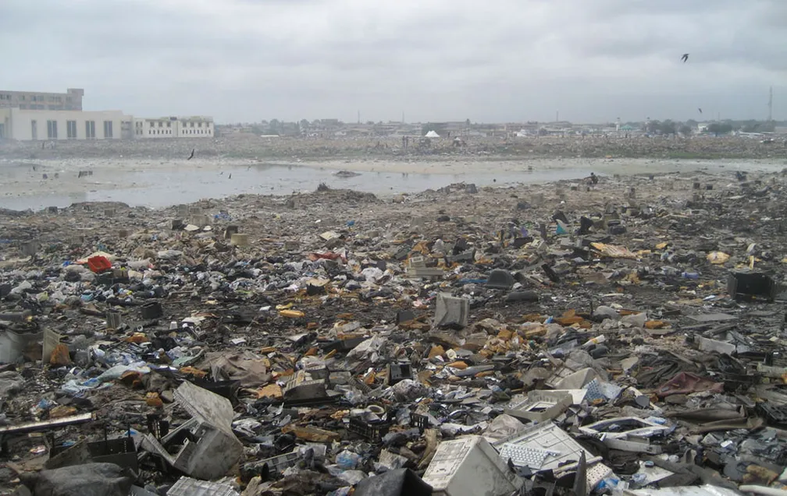

Sobre a Plataforma:
Sabe-se que as melhorias tecnológicas trouxeram um grande avanço em comunidades religiosas através
de
mídias sociais, aparelhos sonoros e outros dispositivos eletrônicos.
A ReTec é uma plataforma que foi criada a fim de auxiliar tais comunidades, bem como a população em
geral, sobre o descarte correto
de equipamentos eletrônicos. Nosso propósito é orientar, conscientizar e facilitar o acesso a rotas
de descarte responsáveis.
Por que falar de descarte?
Dados do Monitor Global de Resíduos Eletrônicos, da Organização das Nações Unidas (ONU), indicam que a geração de lixo eletrônico cresce cinco vezes mais rápido do que a capacidade de reciclagem do setor. Em 2022, foram produzidas 62 milhões de toneladas de resíduos eletrônicos, um aumento de 82% em relação a 2010 e o Brasil se destaca negativamente nesse cenário. Além de ser o maior produtor de resíduos eletrônicos da América do Sul, figura entre os cinco maiores geradores do mundo. No mesmo ano, o país gerou 2,4 milhões de toneladas de lixo eletrônico, mas apenas 3% desse total foi coletado e reciclado formalmente.

Com essas informações, vê-se urgência no tema, uma vez que promover práticas de descarte correto, incentivar pontos de coleta e ampliar programas de reciclagem, garantem que cada pessoa compreenda seu papel na preservação do meio ambiente. Ao transformar informação em ação, conseguimos diminuir os impactos do lixo eletrônico, proteger a saúde das comunidades e construir um futuro mais sustentável para as próximas gerações.
Como mudar esse cenário?
Através de pequenas atitudes, quando realizadas coletivamente,
podem contribuir significativamente para reduzir os impactos
ambientais causados pelo lixo eletrônico.
A seguir, apresentamos quatro práticas sustentáveis que podem ser incorporadas ao dia a dia para
reduzir
os impactos ambientais causados pelo descarte inadequado de resíduos eletrônicos.
-
Realização do descarte correto:
Encaminhar celulares, computadores, pilhas e baterias para pontos de coleta especializados, garantindo que esses materiais recebam a destinação adequada. Essa prática evita que substâncias potencialmente prejudiciais contaminem o solo e a água, além de permitir que componentes eletrônicos sejam separados e encaminhados para processos de reciclagem.
-
Reutilização de equipamentos:
Antes de descartar um aparelho, avaliar a possibilidade de conserto, doação ou reaproveitamento, prolongando sua vida útil e reduzindo o desperdício. Equipamentos que ainda funcionam podem ser destinados a outras pessoas ou instituições, contribuindo para a inclusão digital e diminuindo a necessidade de adquirir novos produtos.
-
Conscientização da população:
Compartilhar informações sobre os riscos do descarte inadequado e incentivar práticas sustentáveis dentro de casa, nas escolas e nas comunidades. A educação ambiental desempenha um papel fundamental na formação de cidadãos mais conscientes, capazes de reconhecer os impactos de suas escolhas e adotar atitudes responsáveis em relação ao meio ambiente.
-
Incentivos a programas de reciclagem:
Apoiar e incentivar a criação de programas de coleta seletiva e reciclagem de resíduos eletrônicos, envolvendo empresas, instituições de ensino, órgãos públicos e comunidades. Essas iniciativas facilitam o acesso a pontos de coleta, estimulam a participação da população e permitem que materiais como cobre, alumínio e outros componentes sejam recuperados e utilizados na fabricação de novos produtos, contribuindo para a economia circular e a preservação dos recursos naturais.
Com atitudes como essas, podemos transformar hábitos, diminuir a poluição e contribuir para um futuro melhor para todos. Na próxima sessão, você terá mais informações sobre pontos de coleta ao redor do Brasil, e como você pode chegar até eles.